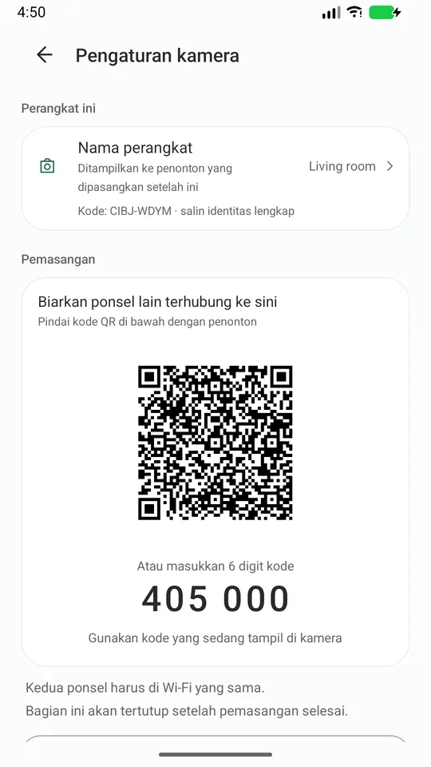
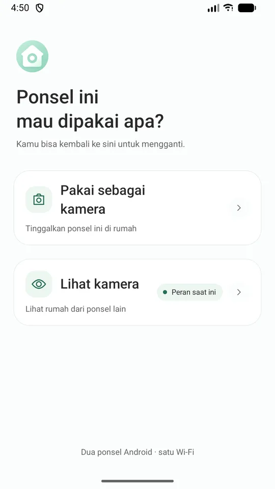
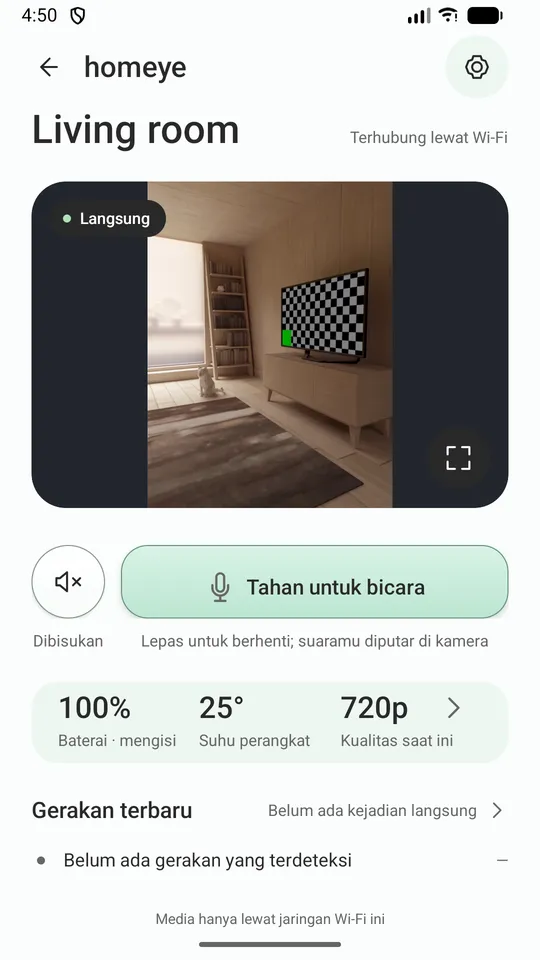
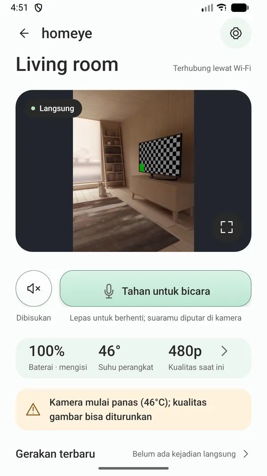
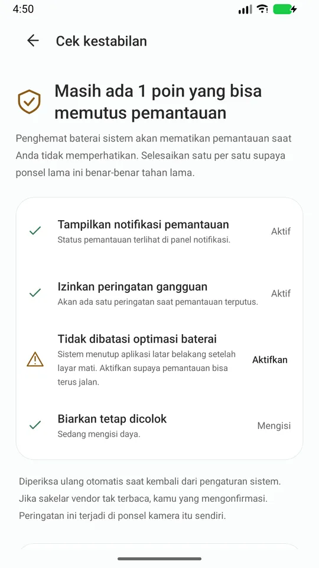
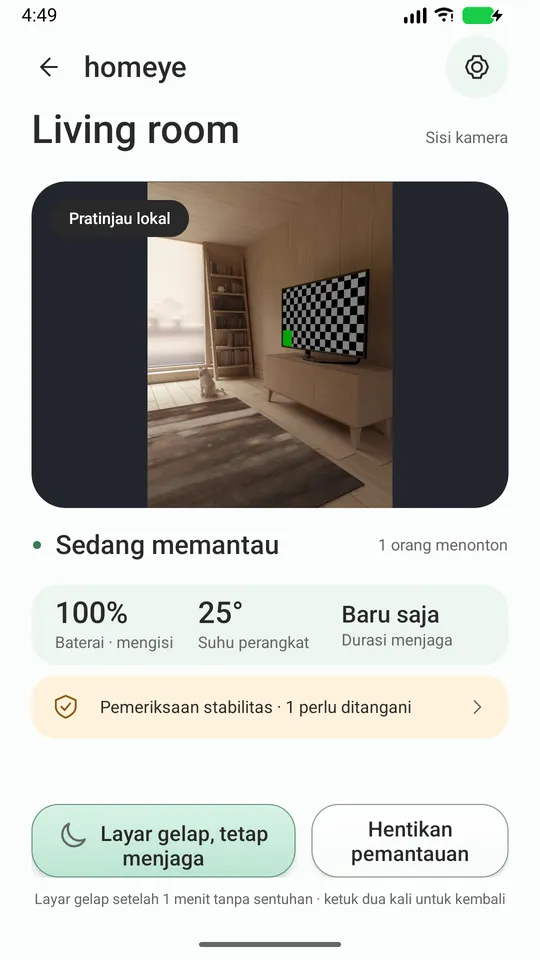

HP Android lama di laci itu adalah kamera rumah.
Dua HP, satu Wi-Fi. Video langsung, bicara dua arah, dan peringatan gerakan — tanpa akun, tanpa cloud di tengah, tanpa iklan.
HP Android lama di laci itu langsung jadi kamera begitu dicolok ke listrik. Tanpa beli perangkat, tanpa bikin akun.
Ia tidak membohongi kamu
Anda tahu saat kameranya mati
Kamu akan tahu saat ia mati — tidak perlu sadar sendiri kalau gambarnya membeku.
Menjelaskan kenapa kualitas turun
Kalau kualitas turun karena HP panas atau baterainya tipis, ia memberi tahu alasannya. Tidak diam-diam jadi buram.
Memandu ke setiap setelan sistem
"Pemeriksaan stabilitas" mendaftar saklar sistem yang diam-diam mematikan aplikasi latar, lalu mengantar kamu ke tiap-tiapnya.
Log hanya ke tempat yang Anda kirim
Kalau ada masalah, kamu bisa mengekspor log diagnostik dan mengirimkannya ke pengembang. Log itu tidak pernah terunggah sendiri.
Cara pakai
- Pasang Homeye di kedua HP, di Wi-Fi yang sama.
- Di HP lama, pilih "Pakai sebagai kamera". Colok ke listrik dan arahkan.
- Di HP harian, pilih "Pakai sebagai penonton", lalu pindai kode QR di layar HP lama.
Sekali pasangkan; setelah itu tinggal buka.

Tampilan





Bisa apa saja
- Gambar dan suara langsung, dengan empat tingkat kualitas yang mengikuti suhu dan baterai
- Tekan untuk bicara
- Deteksi gerakan, dengan pemberitahuan dan gambar kecil di penonton
- HP-kamera bisa mematikan layar dan tetap bekerja
- Peringatan baterai lemah dan kepanasan dari sisi kamera
- Zoom dari penonton, sejauh lensa HP itu sanggup
- 15 bahasa, mengikuti pengaturan sistem
Yang belum bisa di versi ini — disampaikan di depan
Hanya jalan di Wi-Fi yang sama Kalau kamu di luar dan memakai data seluler, versi ini tidak bisa terhubung. Akses jarak jauh butuh server; masih dievaluasi dan tidak ada di rilis ini.
Tidak bisa menjanjikan "tidak pernah putus" Android membatasi kerja latar untuk semua aplikasi, tidak ada yang bisa menjanjikan itu. Yang kami janjikan: kamu akan tahu saat ia berhenti.
Bukan alat medis dan tidak menggantikan pengawasan orang dewasa.
Privasi (tiap baris bisa kamu periksa sendiri)
- Gambar dan suara hanya berjalan di dalam Wi-Fi yang sedang kamu pakai, tidak pernah lewat server kami.
- Tidak perlu akun. Kami tidak mengumpulkan email atau nomor teleponmu.
- Tanpa iklan dan tanpa SDK analitik.
- Kami tidak punya server media dan tidak menyediakan rekaman awan.
- Identitas perangkat adalah pasangan kunci yang dibuat di keystore perangkat keras HP; kunci privatnya tidak pernah keluar.
- Agar bisa ditemukan, HP-kamera menyiarkan nama dan sidik jari kunci publiknya di Wi-Fi Anda — hanya itu.
Yang kamu butuhkan
Dua HP Android (7.0 ke atas) di Wi-Fi yang sama. Sebaiknya HP-kamera tetap tercolok listrik.